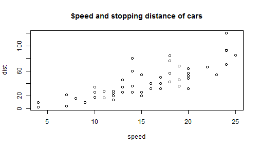

This is an R Markdown document. Barreveld reports that "Markdown is a simple formatting syntax for authoring HTML, PDF, and MS Word documents"[@barreveld_preventive_2013]. For more details on using R Markdown see http://rmarkdown.rstudio.com.
plot(cars, main = "Speed and stopping distance of cars")
When you click the Knit button a document will be generated that includes both content as well as the output of any [@moiniche_systematic_1999] embedded R code chunks within the document. You can embed an R code chunk like this [-@moiniche_systematic_1999]:
This bibliography was managed by Zotero and exported as a .bibex file from Zotero. It is formatted using a Citation Style Language (CSL) file from CitationStyles.org.